설치 문의
매장 위치와 업종, 현재 TV 환경을 간단히 확인합니다.
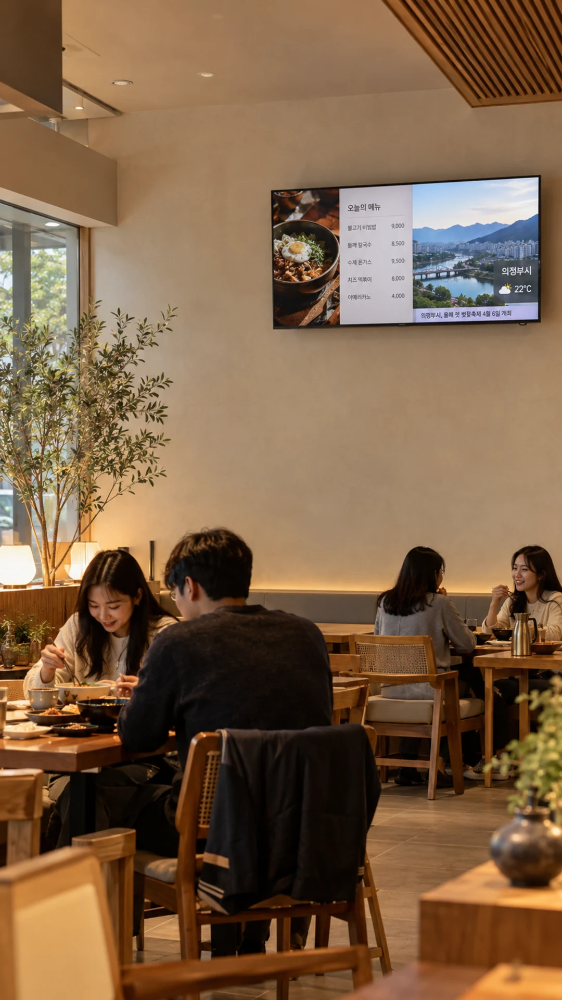
매장 화면은 더 유용하게, 지역 콘텐츠는 자연스럽게.
LocalVision이 설치부터 운영까지 함께합니다.
※ 설치 가능 여부와 방식은 매장 환경 확인 후 안내됩니다.
사람들이 일부러 찾아보지 않아도, 이미 머무르고 있는 공간에서 자연스럽게 지역과 연결됩니다.
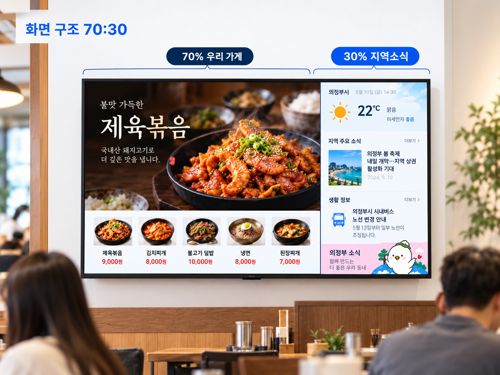
메뉴, 가격, 추천상품, 이벤트를 보여주는 화면에 LocalVision 운영 시스템을 더합니다.
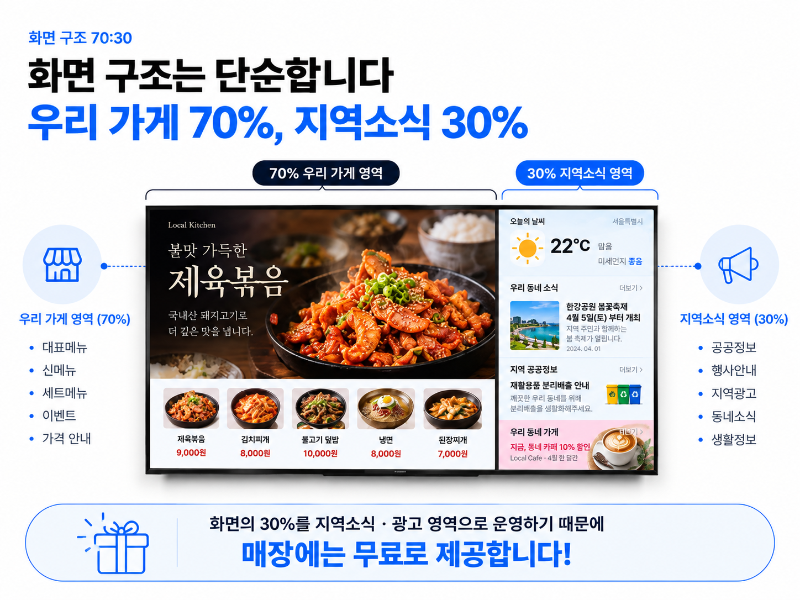
※ 무료 설치 범위, 기기 제공 여부, 기존 TV 활용 여부는 매장 환경과 협의 조건에 따라 달라질 수 있습니다.
사장님에게 필요한 화면은 유지하고, 일부 영역에서는 우리 동네의 정보와 콘텐츠가 흐릅니다.
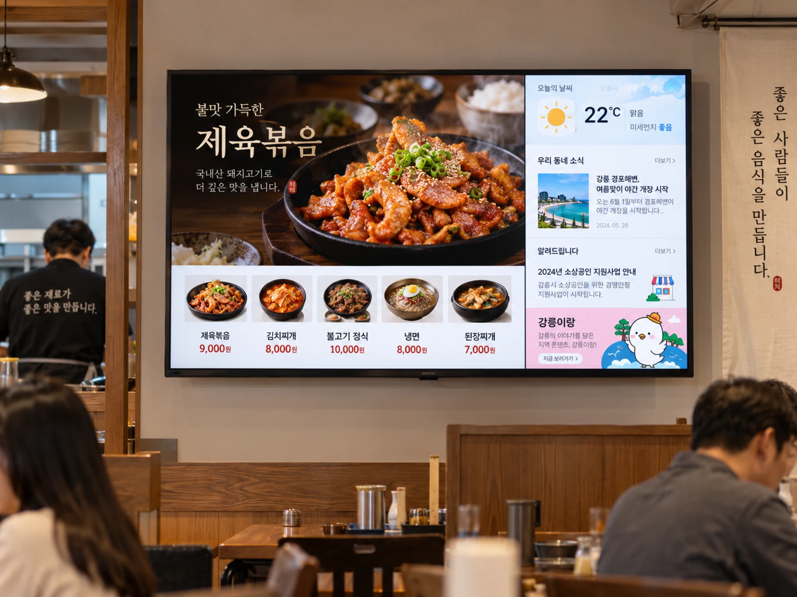
메뉴 · 가격 · 추천상품 · 이벤트
매장 자체 홍보 콘텐츠
지역소식 · 공공정보 · 로컬콘텐츠 · 광고
매장 운영을 방해하지 않으면서 지역 미디어가 함께 작동합니다.
매장 위치와 업종, 현재 TV 환경을 간단히 확인합니다.
설치 위치, 전원·네트워크, 기존 TV 활용 가능 여부를 확인합니다.
매장용 콘텐츠와 LocalVision 30% 영역을 함께 구성합니다.
실제 매장 운영에 맞춰 콘텐츠를 편성하고 관리합니다.
음식점, 카페, 병원, 생활서비스처럼 체류가 발생하는 공간을 중심으로 협의합니다.
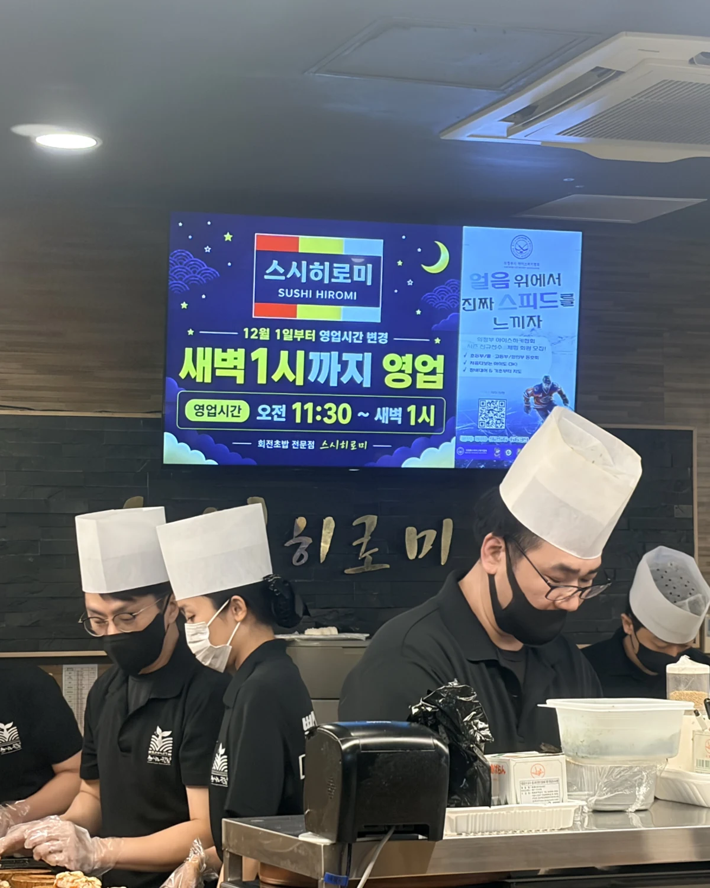
식사와 대화가 이어지는 공간
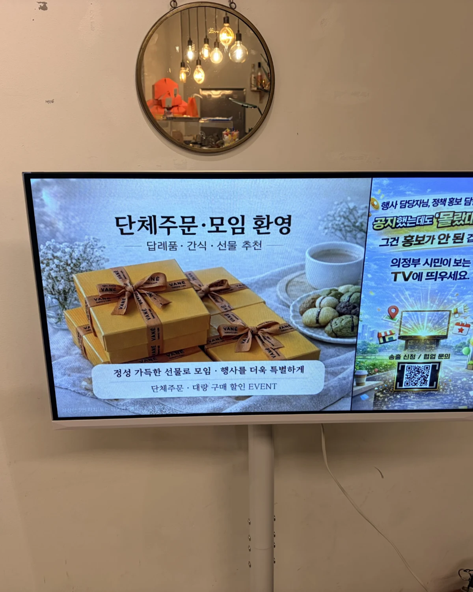
기다리고 쉬어가는 공간

대기시간이 발생하는 공간

운동 · 미용 · 다양한 생활공간
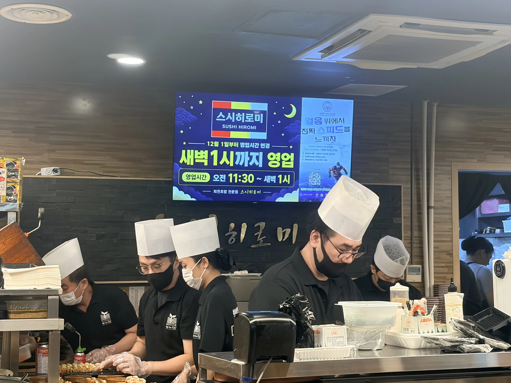
매장 자체 콘텐츠와 지역 콘텐츠를 한 화면에서 운영
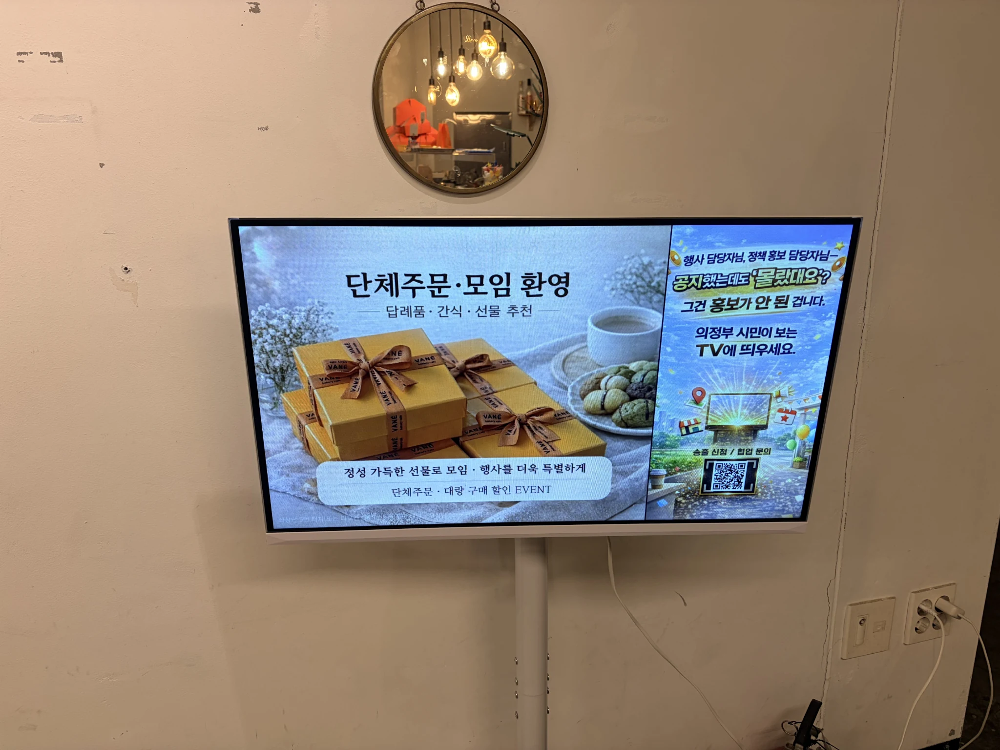
고객 체류시간 동안 자연스럽게 작동하는 화면
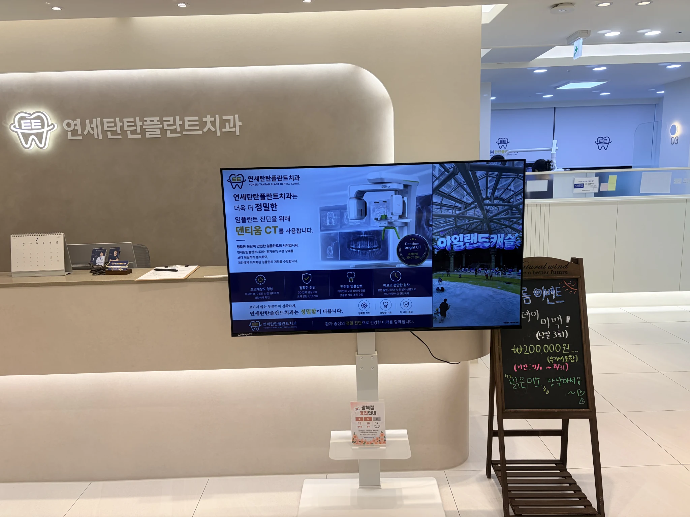
대기공간의 안내와 지역정보 접점을 함께 구성
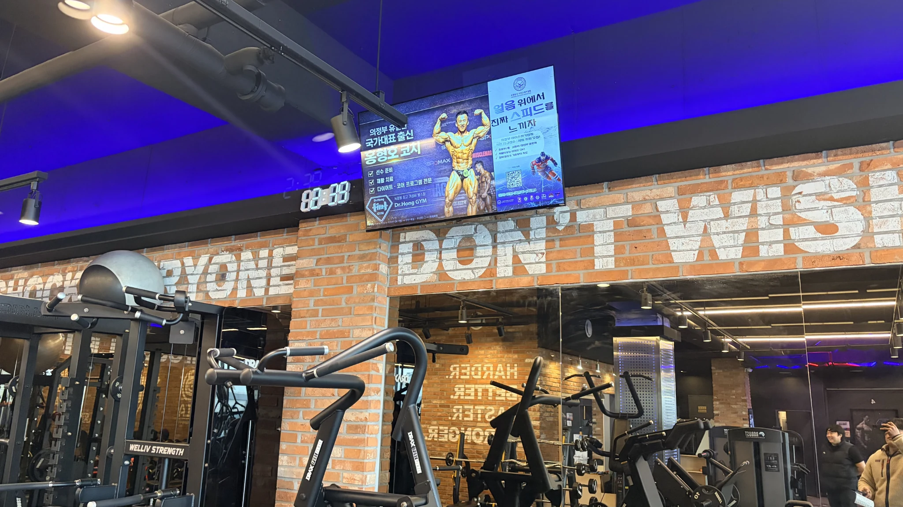
운동 · 미용 · 생활형 서비스 공간에서 자연스럽게 노출
매장 화면을 유지하면서, 30% 영역에는 지역소식과 LocalVision 로컬 콘텐츠, 지역광고가 함께 편성됩니다.
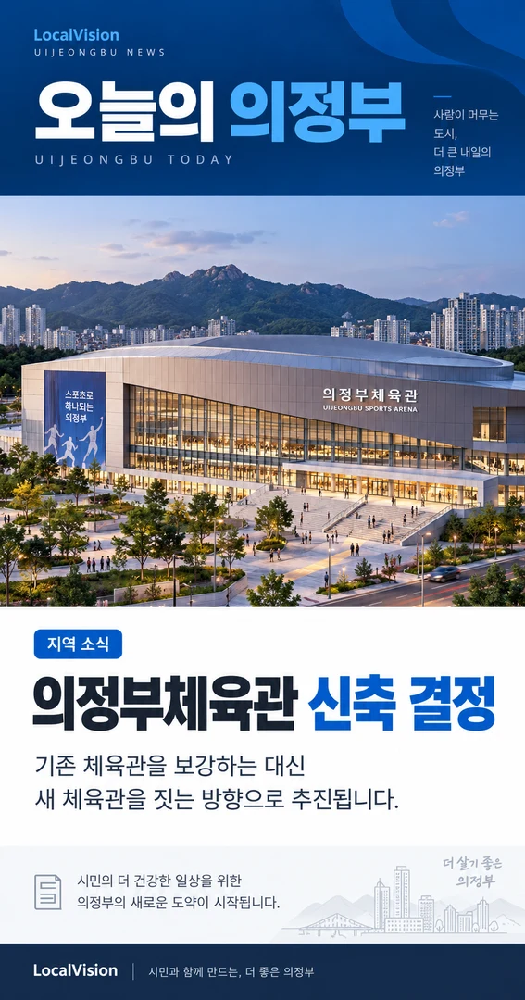
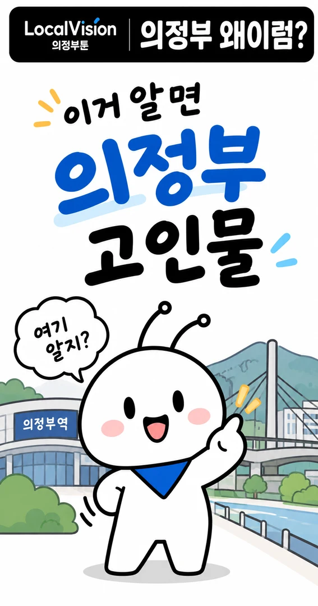
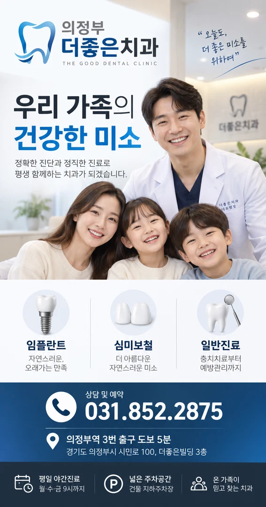
LocalVision이 실제로 설치·운영되고 있는 지역 매장 로고를 모았습니다.
설치 가능 여부부터 먼저 확인해보세요.
설치 범위와 기기 제공 방식은 매장 환경, 기존 TV 유무, 운영 조건에 따라 달라질 수 있습니다. 먼저 매장 환경을 확인한 뒤 가능한 방식을 안내합니다.
가능한 경우 기존 TV를 활용할 수 있습니다. 화면 비율, 연결 방식, 네트워크 환경을 설치 전 확인합니다.
매장용 메뉴·홍보 콘텐츠의 변경 방식은 운영 구조에 맞춰 협의합니다. 반복적인 현장 작업을 줄이는 방향으로 운영합니다.
LocalVision은 의정부 생활공간의 TV를 통해 지역 타깃에게 브랜드를 반복적으로 노출합니다.
* 노출 사례와 체류환경은 운영기간·매장별 조건에 따라 달라질 수 있습니다.
사람들이 먹고, 쉬고, 기다리는 공간에 설치된 로컬비전 네트워크를 통해 지역 타깃에게 더 가까운 광고를 전달합니다.
42 운영거점 · 의정부시 전역주문하고, 기다리고, 식사하고, 쉬는 동안 화면은 생활공간 안에 계속 존재합니다.
광고를 보기 위해 방문한 게 아니라 이미 공간에 들어온 상태.
메뉴와 함께 화면을 자연스럽게 마주칩니다.
TV CONTACT머무는 동안 반복적으로 콘텐츠가 노출됩니다.
REPEATQR · 검색 · 방문 · 캠페인 참여로 이어질 수 있습니다.
캠페인 기간과 생활권에 맞춰 LocalVision 화면에 광고를 편성합니다.
TV 화면에 맞는 광고 이미지·영상 제작을 함께 설계할 수 있습니다.
인스타그램 콘텐츠와 매장 TV를 연결해 지역 반응을 확장할 수 있습니다.
지역 광고도 TV 30% 화면에 맞게 세로형 콘텐츠로 편성할 수 있습니다.
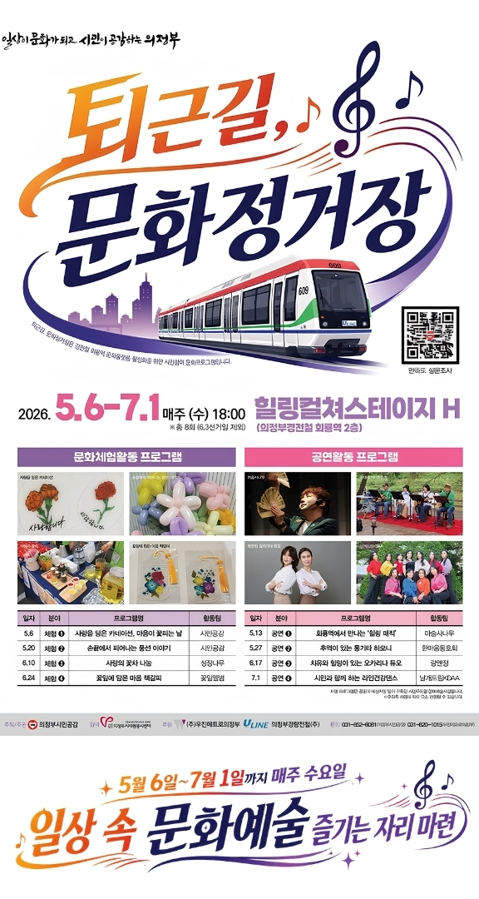
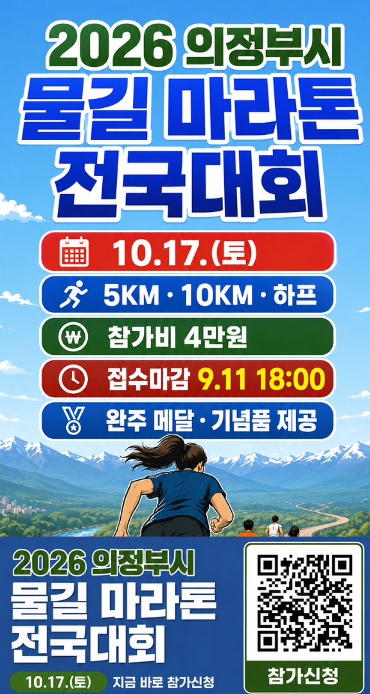
음식점 · 카페 · 병원 · 생활서비스.
시민이 실제로 머무는 공간에서 브랜드를 자연스럽게 반복 노출합니다.


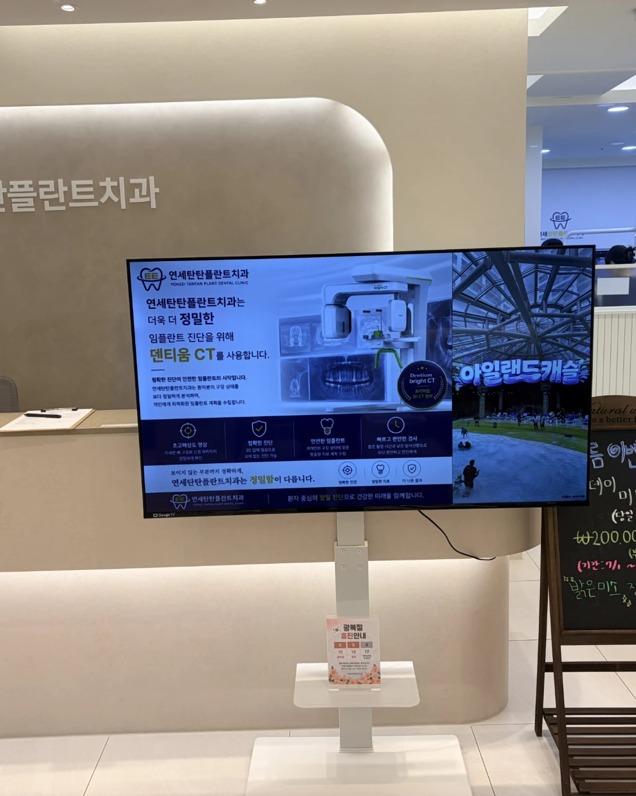
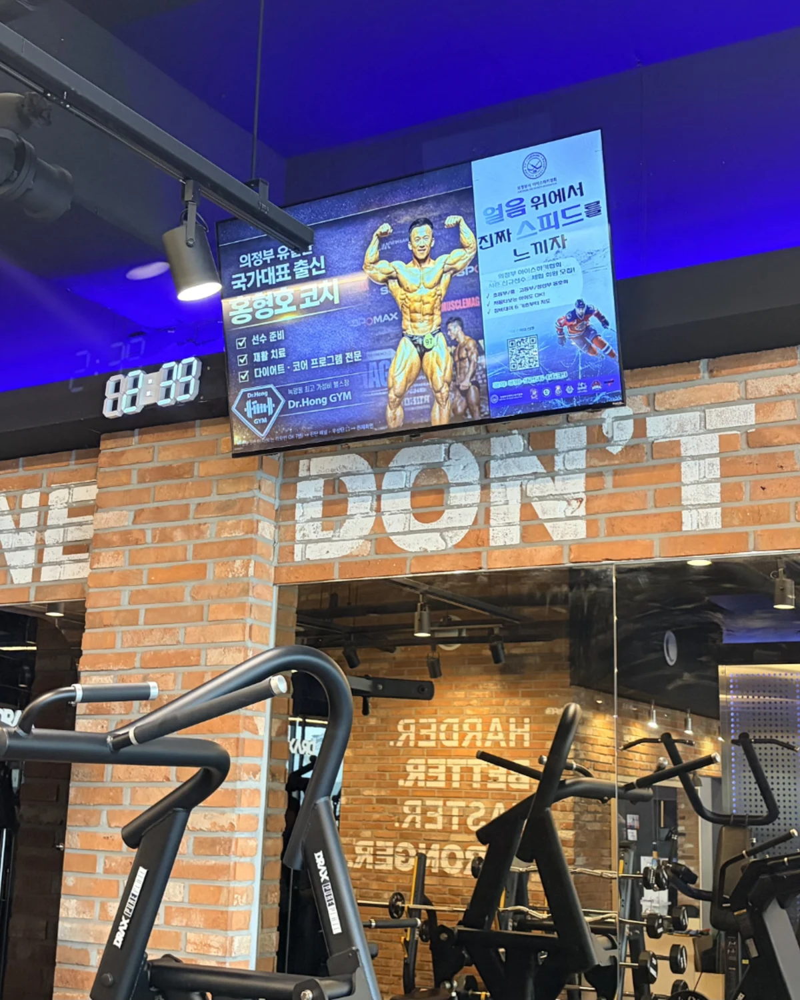
지역 콘텐츠 또는 캠페인 업로드
댓글 · 공유 · 참여 반응 수집
생활공간에서 캠페인 접점 확대
다시 온라인 행동으로 연결
생활공간 기반 노출이 가능한 지역 브랜드와 실제 협력 네트워크를 보여드립니다.
캠페인 목적과 기간을 알려주시면 송출 방식을 함께 설계합니다.
캠페인 목적과 운영 가능 매장을 기준으로 음식점, 카페, 병원·의원, 생활서비스 등 의정부 제휴 생활공간을 협의합니다.
가능합니다. 기존 소재를 화면에 맞게 조정하거나 별도의 이미지·영상 제작을 함께 협의할 수 있습니다.
캠페인 상품과 운영 방식에 따라 송출 기간, 대상 매장, 운영 결과를 정리한 리포트 제공 범위를 협의합니다.
사람들이 먹고, 쉬고, 기다리는 공간에 설치된 로컬비전 네트워크를 통해 지역 주민에게 더 가까운 공공정보를 전달합니다.
42 운영거점 · 의정부시 전역기존 채널은 시민이 직접 찾아봐야 하고,
LocalVision은 시민이 머무는 공간에서 자연스럽게 보이게 합니다.
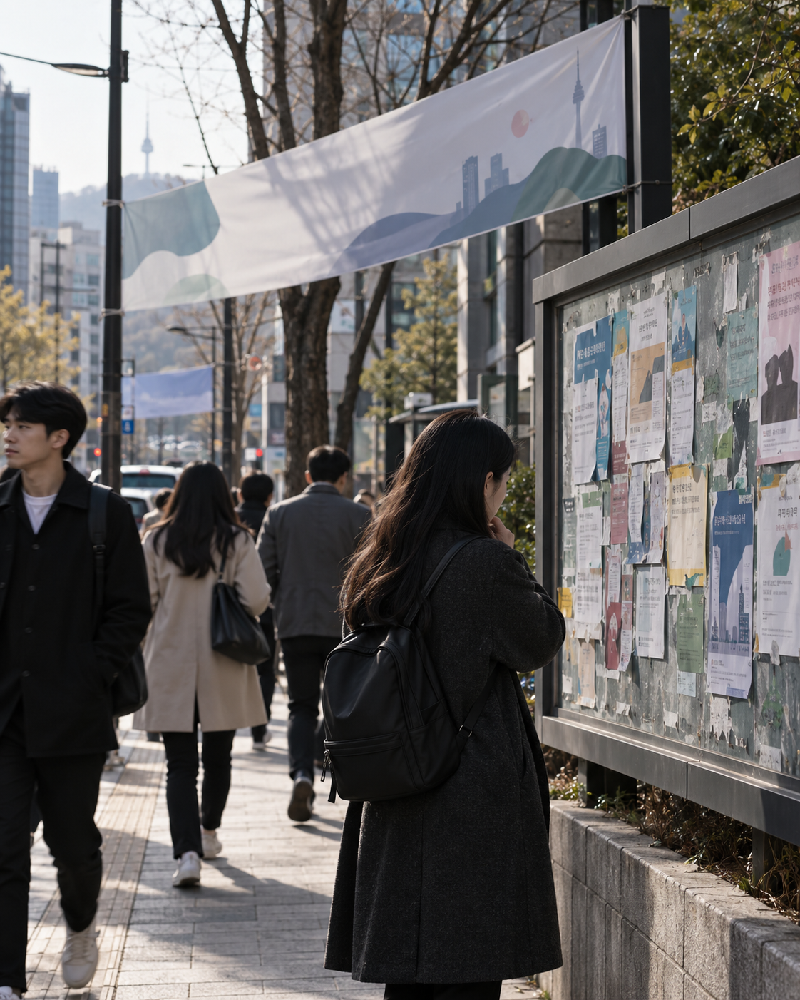
배너 · 현수막 · 홈페이지 · 게시판 등 정보가 있는 곳으로 시민이 직접 접근해야 합니다.
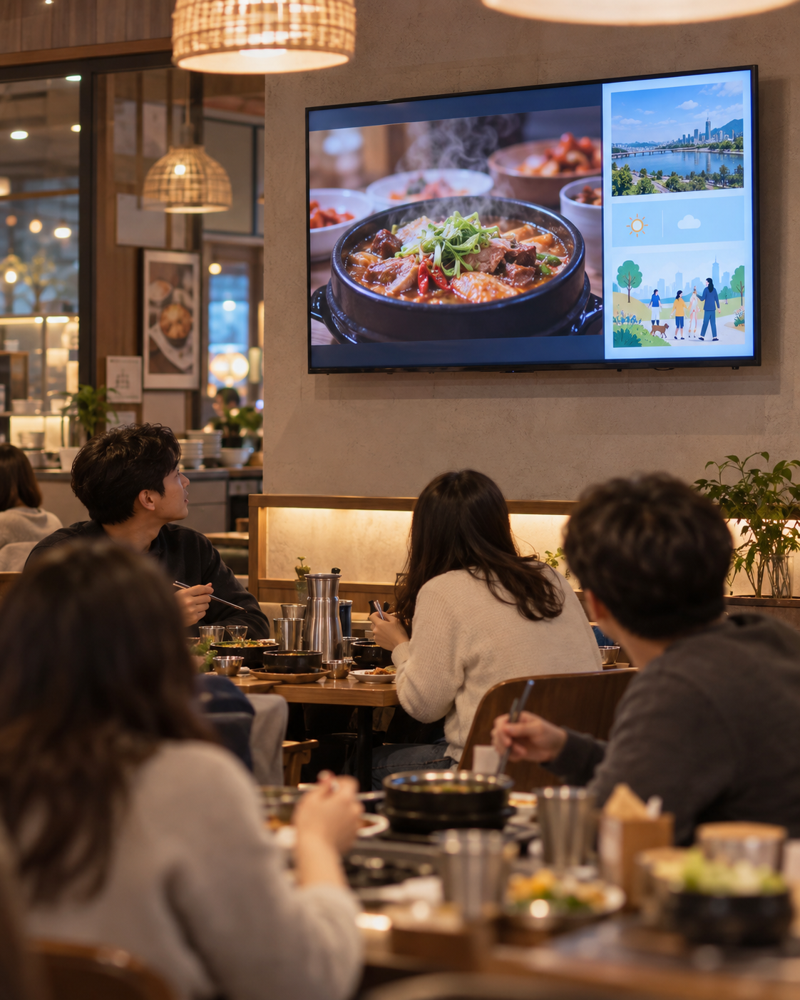
우리 TV가 설치된 생활공간에서 식사하고 기다리는 동안 공공정보를 자연스럽고 반복적으로 보게 됩니다.
기존 홍보 채널은 유지하고, LocalVision으로 생활동선 접점을 추가합니다.
기관에서 전달하고 싶은 내용을 목적에 맞게 구성해
생활공간 TV에 맞는 카드형 콘텐츠로 송출합니다.
정책·행사·공지 콘텐츠를 받아 등록하고, 원격 관리 구조를 통해 생활공간 TV로 송출합니다.
정책 · 행사 · 공지 · 캠페인 소재
송출 기간과 콘텐츠 순서를 관리
매장별 플레이어를 통해 콘텐츠 재생
시민이 머무는 공간에서 반복 노출
홈페이지 · 신청 · 설문 등 행동으로 확장
음식점, 카페, 병원, 생활서비스처럼 시민이 반복 방문하는 공간을 지역 미디어 접점으로 활용합니다.
시민 접점이 되는 생활공간 네트워크를 중심으로 지역 파트너와 함께 운영합니다.
사업 목적, 기간, 콘텐츠 유형을 알려주시면 운영안을 함께 설계합니다.
정책, 행사, 안전, 복지, 교육, 시민참여 등 생활공간에서 시민에게 전달할 필요가 있는 정보 중심으로 협의합니다.
기관은 송출할 콘텐츠와 일정 정보를 제공하고, 등록·편성·원격 송출 등 운영 구조는 LocalVision과 협의할 수 있습니다.
콘텐츠 목적에 따라 QR을 통해 기관 홈페이지, 신청 페이지, 설문, 캠페인 참여 페이지 등으로 연결할 수 있습니다.
생활공간에서 시작되는 의정부 로컬 미디어